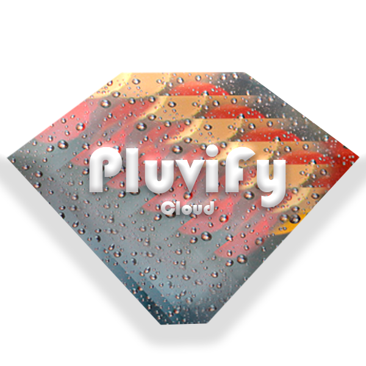

<mat-card class="example-card">
  <mat-card-header>
    <mat-card-title>Iniciar Sesión</mat-card-title>
    <mat-card-subtitle>Ingresa el usuario y contraseña</mat-card-subtitle>
  </mat-card-header>
  <div class="image-container">
    
  </div>
  <mat-card-content>
    <div style="align-items: center; position: relative; text-align: center; margin: 20px;">
      <h2>Bienvenido al Pluviómetro</h2>
      <small>Incia sesion para comenzar a medir</small>
    </div>
  </mat-card-content>
  <mat-card-actions style="text-align: right;">
    <button *ngIf="!isAuth" mat-button (click)="login()">Iniciar Sesión con Google<mat-icon class="mat-18">login</mat-icon></button>
    <a *ngIf="isAuth" mat-button [routerLink]="['/pluviometer']" routerLinkActive="router-link-active" >Pluviometros<mat-icon class="mat-18">add</mat-icon></a>
    <a mat-button href="https://github.com/DarkUnknowKnigth/Pluviometro">Github<mat-icon class="mat-18">favorite</mat-icon></a>
  </mat-card-actions>
</mat-card>

